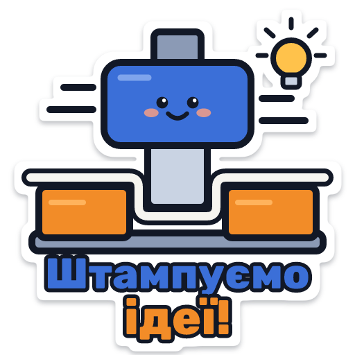
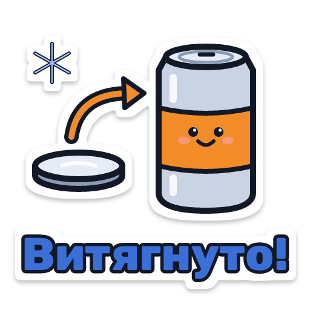
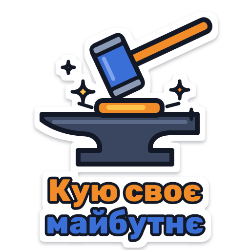
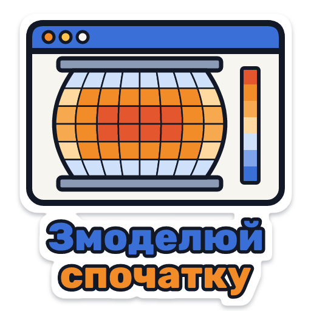
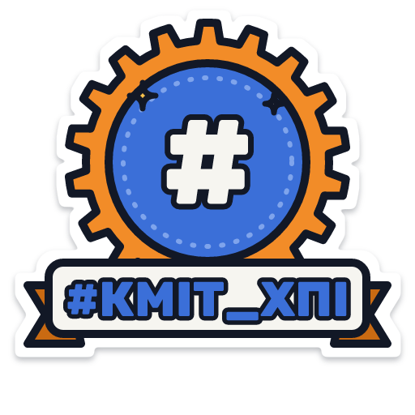
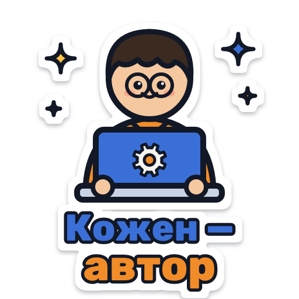
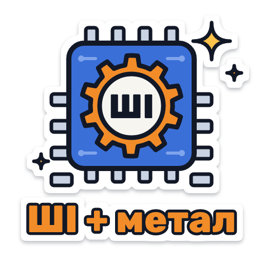
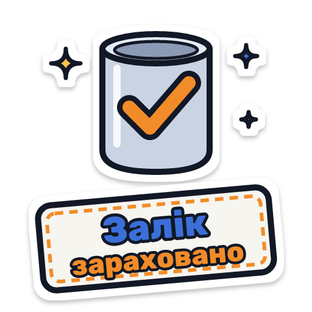

-

Штампуємо ідеї!
Пуансон, матриця і лист — листове штампування.
-

Витягнуто!
Холодне витягування: кругла заготовка → корпус банки.
-

Кую своє майбутнє
Молот, ковадло і розпечена заготовка — кування.
-

Змоделюй спочатку
Сітка деформацій під час осадження — як у QForm.
-

#КМІТ_ХПІ
Бейдж спільноти — для своїх.
-

Кожен — автор
Девіз спільноти: кожен учасник — автор.
-

ШІ + метал
Штучний інтелект у обробці тиском.
-

Залік зараховано
Стакан після витягування — і оцінка в кишені.


Як додати в Telegram
Власний набір стікерів робиться за кілька хвилин через офіційного бота.
- Відкрийте бота @Stickers і надішліть команду
/newpack, далі вкажіть назву набору. - Надішліть PNG-файл стікера як файл (не як фото). Формат — 512×512 пікселів із прозорим тлом, усі файли тут саме такі.
- Надішліть емодзі, з яким асоціюється стікер (наприклад, 🔨 або 🤖). Повторіть кроки 2–3 для кожного стікера.
- Надішліть
/publish, оберіть іконку набору та коротке посилання — готово, діліться ним у чаті!
SVG-версії — для друку, презентацій і доопрацювання: їх можна збільшувати без втрати якості.